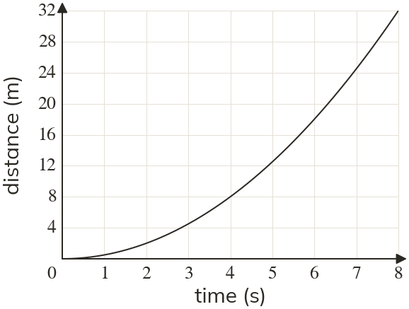

Westonbirt Maths · Compound Measures
Combining Compound Measures
Name: ______________________ Date: ____________
1
The graph shows the distance (m) a car travels against time (s). Draw a tangent at and use it to estimate the speed.

2
a) Draw a tangent at and estimate the speed.
b) Is the car speeding up or slowing down?
b) Is the car speeding up or slowing down?
3
A tangent to a distance-time curve passes through and in seconds and metres. Kai gives the speed as m/s. What is his mistake? Estimate the speed.
4
A tangent to a graph of temperature against time passes through and in minutes and °C. Find the rate of change.
5
On the graph in question find the average speed from to
Why is it not the speed at ?
Why is it not the speed at ?
Ext
On the graph in question at what time is the speed m/s? Draw a tangent to check.